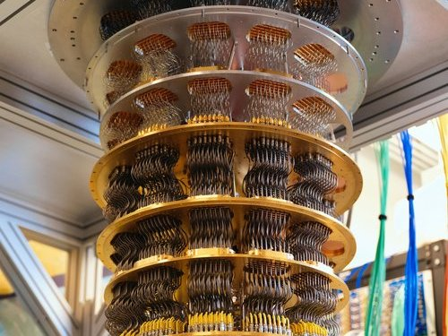

Quantum computing is a cutting-edge field that uses principles of quantum mechanics to process information in ways that classical computers cannot. Unlike classical computers, which use bits to represent data as 0s or 1s, quantum computers use quantum bits or qubits. Qubits have the unique property of being able to represent both 0 and 1 simultaneously due to superposition.
At its core, quantum computing is a new approach to computing that takes advantage of the strange and counterintuitive principles of quantum mechanics. Traditional computers store and process information as binary bits (0s and 1s), which are used to represent and manipulate data. In contrast, quantum computers use quantum bits, or qubits, which can exist in multiple states at once, thanks to the phenomenon known as superposition.
Quantum computers leverage these principles—superposition and entanglement—along with quantum interference, a process that helps fine-tune the calculation of probabilities. Through specialized quantum algorithms, quantum computers can perform complex calculations at speeds that would take classical computers centuries to complete. For example, quantum computers can quickly break down large numbers into prime factors, which is a computationally intense task for classical systems. This ability has huge implications for fields like cryptography, where the security of digital communication relies on the difficulty of factoring large numbers. The Challenges of Quantum Computing Despite its promise, quantum computing is still in its infancy. Building and maintaining a stable quantum computer requires overcoming significant technical challenges. Qubits are extremely delicate and sensitive to their environments, which can lead to errors or “decoherence” if not carefully controlled. To address this, researchers are developing various methods for error correction and improving qubit stability. One such method involves creating quantum gates (the quantum equivalent of classical logic gates) that are highly resistant to noise. Companies like IBM, Google, and Honeywell, along with academic institutions, are making strides in this area, though practical and scalable quantum computers are still years away.
